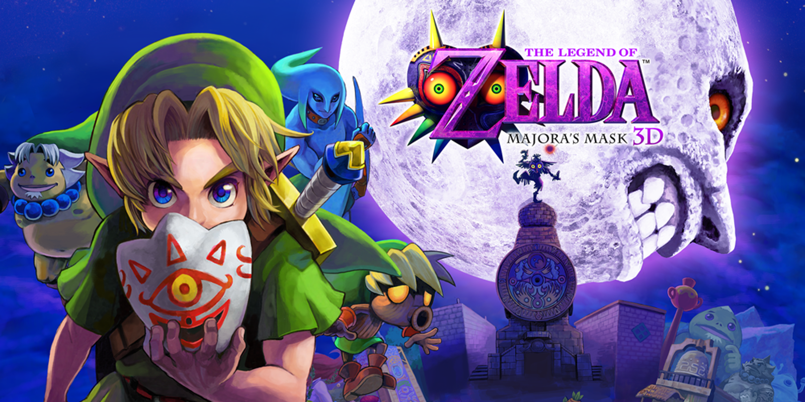

The Legend of Zelda:Breath of the Wild

The Legend of Zelda: Breath of the Wild is a open world adventure game where the protagonist, Link, must save Hyrule from the Calamity that happenned one hundred years ago.Link must reclaim the divine beasts by destroying enemies and sovling puzles.
Official Website
Super Mario Galaxy
Super Mario Galaxy takes the classic platforming series to the stars. In Super Mario Galaxy, Mario must save Princess Peach from Bowser once again, but this time he has help. He works together with Rosalina and the Lumas to repower their starship and travel to bowser's castle at the center of the universe.
Wikipedia Page
Splatoon 2
Splatoon 2 is a colorful twist on the third person shooter Genre. In splatoon, you play as an inkling that change between a squid and humanoid form. The Humanoid form has the advantage of sprying ink with various weapons, while the squid can quickly swim through that ink. Face off in online matches with people from around the world while you try to cover the map with your ink.
Official Website
Mario Kart 8 Deluxe
Mario Kart 8 Deluxe is a racing game that featurers characters from the mario series. It had fun courses that contain weapons you can use against your enemies.
Official Website
Minecraft

Minecraft is the famous sand box game where anything is possible. Whether you like building gorgeous mansions or designing machines that can automatically harvest crops, it is the game for you.
Official Website
The Legend of Zelda: Majora's Mask

The Legend of Zelda Majora's Mask features Link after ocarina of time. Link must get back the Ocarina from the skull kid, but he must be careful. With the power of the Majora's mask, the skull kid will end the world in only three days.
Wikipedia Page
Pokemon Platinum

Pokemon Platinum is the last release of the fourth generation of Pokemon games. Battle your enemies on your way to become the champion of the pokemon league, and also put and end to the evil plans of team galactic.
Wikipedia Page
Stardew Valley

Stardew Valley is a farming simulator game made by just one person, but don't let that get you dissapointed. In Stardew Valley, you can grow crops, raise animals, make friends with the townspeople, destroy capitalistic companies and more.
Official Website
Super Smash Bros. Ultimate

Smash Ultimate is a game that truly lives up to the name of ultimate. This fighting game has over 75 characters and more to come. These characters all come from different game series to create the ultimate crossover.
Official Website
Paper Mario: The Thousand Year Door
In this game mario is paper. Mario must solve puzzles and fight boseses to open the thousand year door and save the land of rogueport.
Wikipedia Page